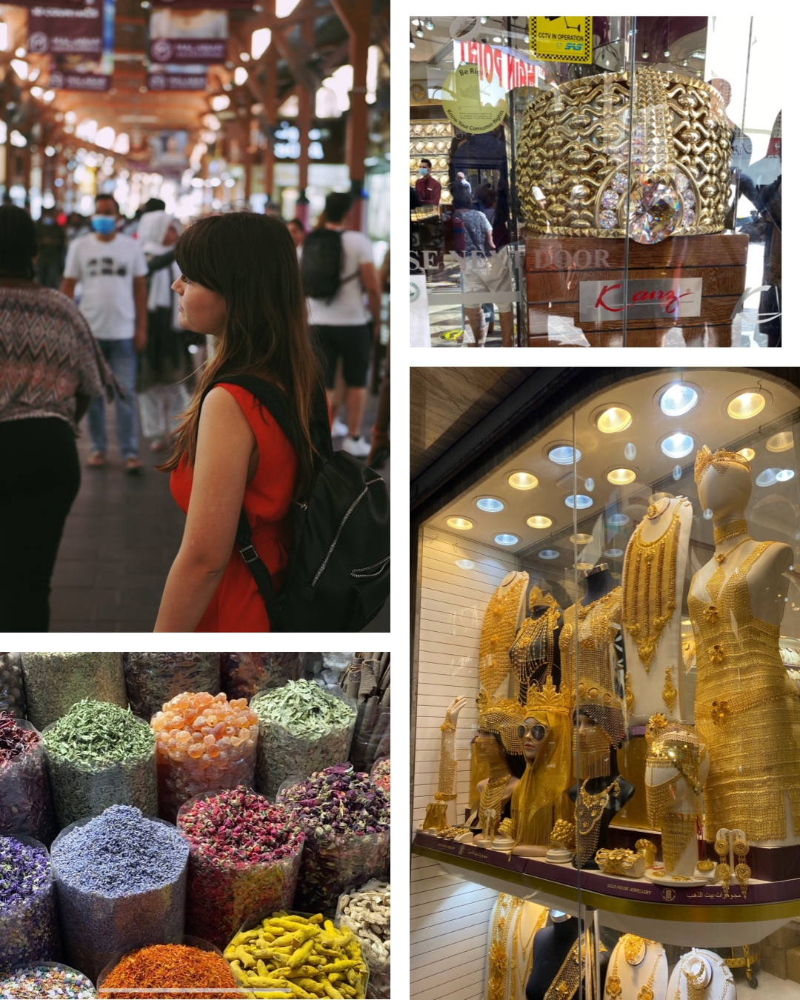
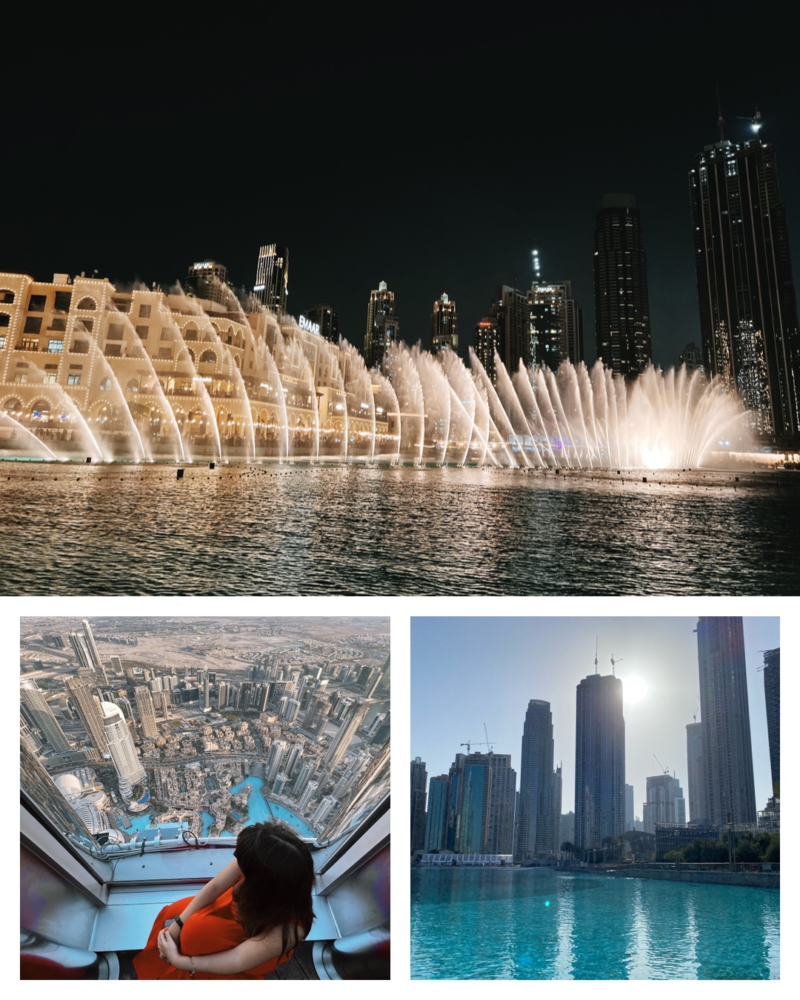
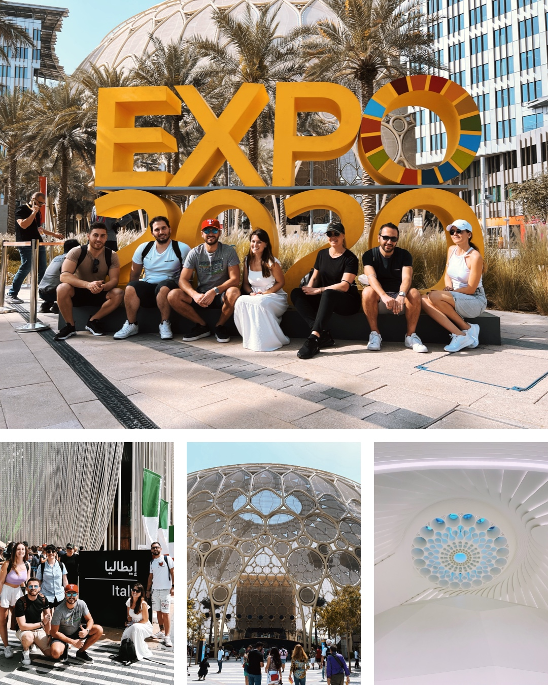
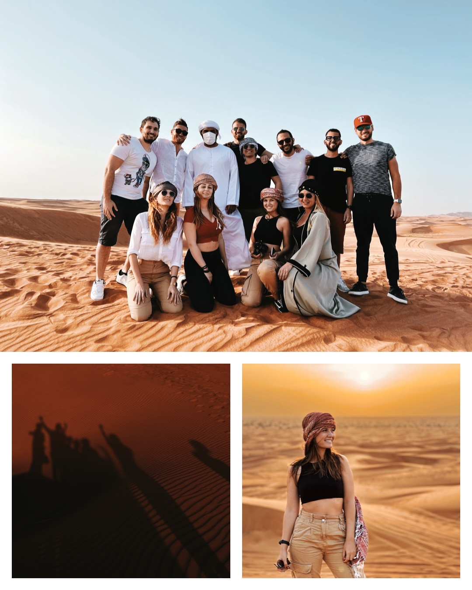
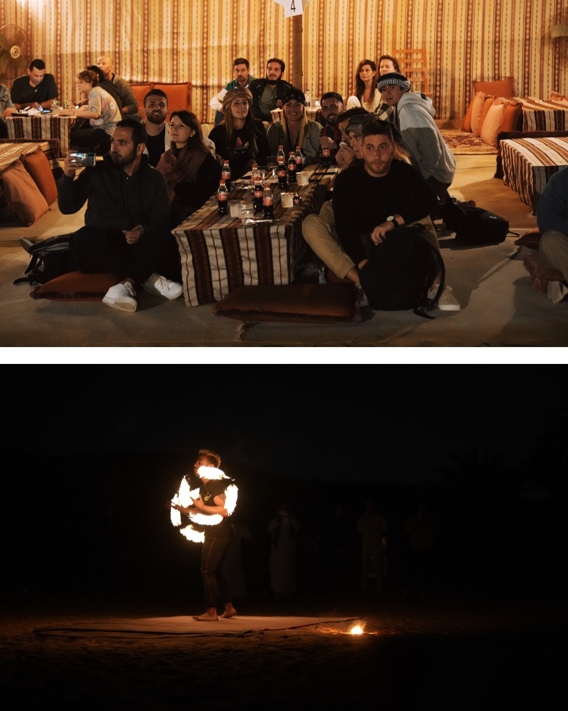
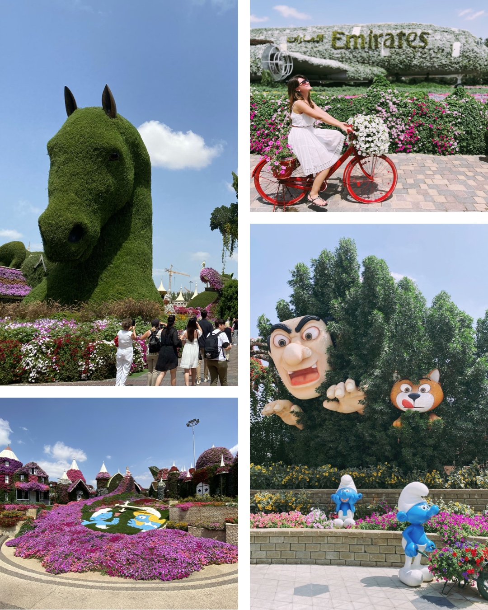
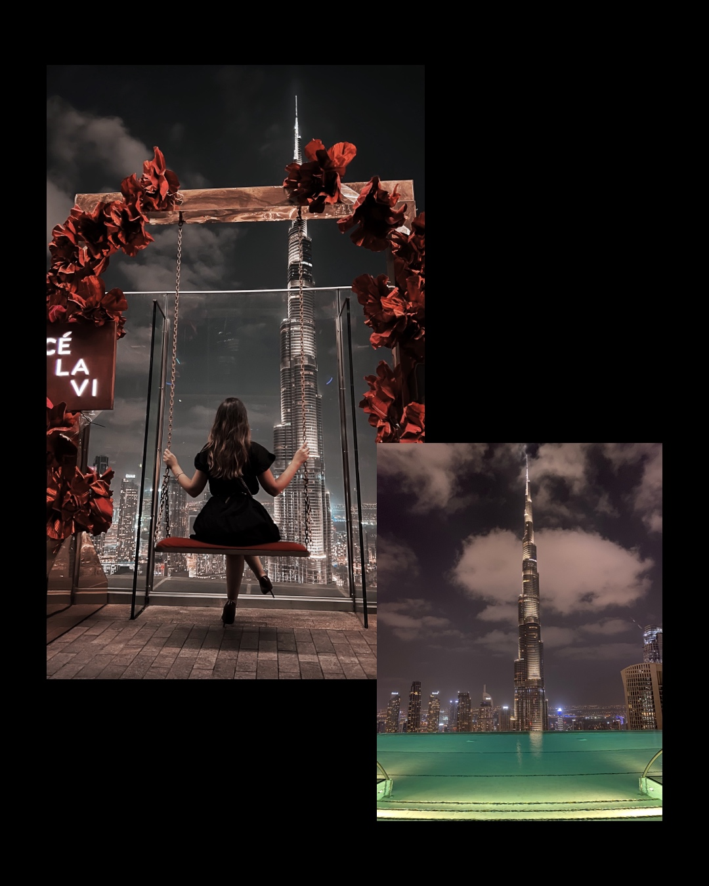
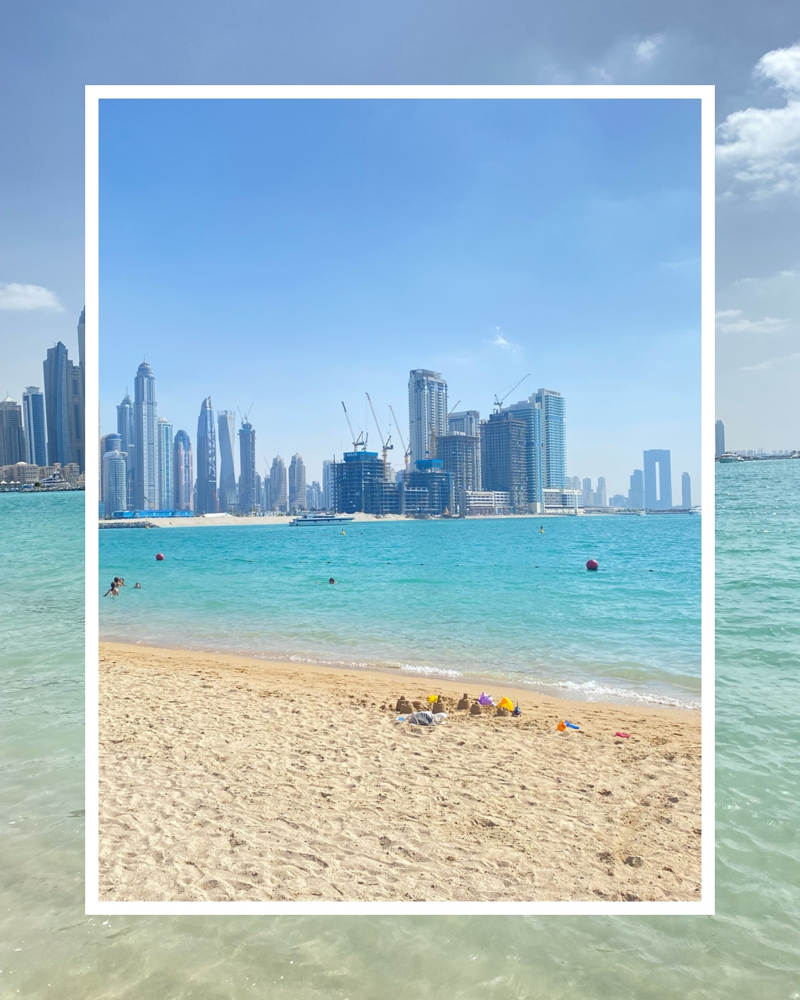

Il mio viaggio a Dubai
Itinerario di 5 giorniL'itinerario a seguire è per chi desidera visitare Dubai, vedere le cose più importanti e viverla con tranquillità.
Andare a Dubai è senza dubbio un'esperienza da fare. La città in cui antico e moderno si fondono alla perfezione, una città proiettata verso il futuro,
che presta attenzione ad ogni dettaglio, composizione perfetta di mare e morbide dune, di grattacieli e la magia del deserto. Dubai è diventata una delle
destinzioni turistiche più importanti al mondo. Dubai è la città dove tutto è possibile: i grattacieli più alti al mondo, i centri commerciali più grandi
al mondo, giardino più grande al mondo, gli hotel più lussuosi al mondo.
Primo giorno: Souk, Burj khalifa e Dubai Mall
 La mattina del primo giorno abbiamo visitato i Souk,
ovvero i tipici mercati della Città Vecchia: piena di spezie, profumi, oro, tessuti.
La prima regola in questo posto è CONTRATTARE! Vi proporranno prezzi sempre alti, non mollate e contrattate.
Molto bello il Souk dell'oro, dove si trovano tantissimi gioielli ed oro, in questo luogo l'oro ha davvero un buon prezzo(dovrebbe essere uno dei più bassi al mondo).
E' possibile vedere anche l'anello più grande al mondo.
Successivamente siamo andati al Dubai Mall,
il più grande centro commerciale del mondo per numero di negozi.
Uscendo dal centro commerciale ci troviamo a vedere l'edificio più alto al mondo:
il Burj Khalifa,con un’altezza pari a 828 metri, 160 piani. E' possibile salire in cima, con gli ascensori più veloci che esistano,
nei due osservatori al 125° piano o al 148° piano per godervi una vista mozzafiato. Uscendo dal Burj Khalifa, è possibile dirigersi verso la Fontana di Dubai,
dove si potrà assistere ad uno degli spettacoli più emozionanti al mondo: ogni 30 minuti al suono delle melodie arabe,
i getti d’acqua seguono le note con una danza coreografata.
Secondo giorno: EXPO2020
Expo 2020 Dubai è l’Esposizione Universale: è un evento internazionale dove si incontrano persone provenienti da tutto il mondo,
si connettono tra loro, scambiano idee, imparano e innovano sul tema principale che è collegare le menti e creare il futuro.
Presenta padiglioni da oltre 192 paesi e i visitatori possono vedere una varietà di padiglioni che combinano creatività, ispirazione,
genio architettonico e imparare tutto sulla storia e la cultura di questi paesi.
Si divide in tre aree tematiche: sostenibilità,
opportunità e mobilità. Uno dei padiglioni più belli (a parer mio dal punto di vista architettonico) è quello degli Emirati Arabi Uniti.
A seguire ci sono quello dell'Italia, del Regno Unito, del Giappone, dell'India e tanti altri.
Terzo giorno: Safari nel deserto
 Una delle mie giornate preferite! Ci sono venuti a prendere direttamente in hotel, dopo un'oretta di strada siamo arrivi nel deserto.
Abbiamo fatto il Safari in Jeep, per poi continuare con un giro in quad durante il tramonto.
E credetemi guardare il sole tramontare sul deserto è uno spettacolo che non si scorda facilmente.
Tramontato il sole ci hanno portato in un villaggio,
dove abbiamo cenato con pietanze tipiche e assistito a vari spettacoli, tra cui quello del fuoco e la danza del ventre.
Vi consiglio assolutamente di fare questa esperienza.
Quarto giorno: Miracle Garden e CeLaVi
 La mattina l'abbiamo passata in giro per Dubai Marina dove si può fare una delle passeggiate più lussuose di Dubai.
Sarete circondati da grattacieli che si riflettono sull’acqua, yacht bianchi ormeggiati lungo i moli e una vasta gamma di ristoranti
e posti dove mangiare qualcosa. Un'attrazione molto bella è la Ain Dubai con un'altezza di 250 metri è la ruota panoramica più alta del mondo.
Nel pomeriggio siamo andati al Miracle Garden, il giardino più grande al mondo. Si trova a Dubailand ed è composto da oltre 150 milioni
di fiori distribuiti su una superficie superiore ai 72.000 metri quadrati, tutto prende una forma particolare.
Uno dei pezzi forti di questo giardino è EMIRATES A380, installazione floreale a forma di aereoplano realizzata in collaborazione
con la compagnia aerea Emirates Airline.
La sera siamo andati al CE LA VI, uno dei più famosi locali sui tetti in stile asiatico.
Questo ristorante si trova al 54° piano dell'Address Sky View, è possibile gustare un ottima cena e qualche drink. Gode di una vista pazzesca che si affaccia
proprio sul Burj Khalifa e su una buona parte di Dubai, è possibile fare delle bellissime foto.
Quinto giorno: Palm West Beach e rientro
Palm West Beach è una delle tante spiagge che si possono trovare a Dubai, si trova lungo il tronco dell'isola di Palm Jumeirah
ed il lungomare è lungo 1,6 km.
Se andrai in questa spiaggia divertiti, mangia e fai esercizio. In questa zona ci sono tanti ottimi posti dove
mangiare e tanti hotel.